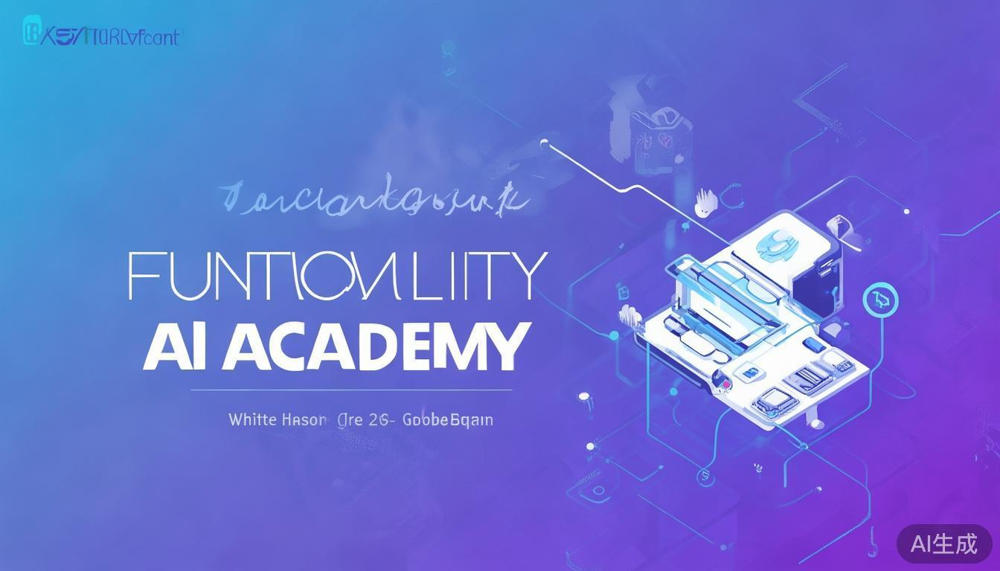

TutorAgent 家教辅导
12 号毕业设计：TutorAgent 家教辅导
本项目针对传统家教成本高、答疑响应不及时、错题复盘无体系、学习计划千人一面的痛点，打造可本地部署的轻量化AI辅导Agent，完成后你将掌握RAG知识库搭建、Agent工具调用、个性化学习链路设计的全流程工程能力。
项目简介
TutorAgent是面向K12及大学基础学科的智能家教辅导Agent，基于大语言模型的推理能力与学习行为数据闭环，替代传统标准化题库的静态答疑模式，实现从问题输入、错因定位、知识点拆解到针对性练习推送、动态学习计划调整的全流程辅导。项目支持本地部署与云端API两种模式，既可以作为个人学习辅助工具使用，也可以二次开发为面向教育机构的轻量化SaaS服务模块，核心目标是用极低的部署成本实现接近真人家教的个性化辅导效果，覆盖数学、物理、英语等逻辑链条清晰、知识点体系明确的学科场景。
功能特性

- 多模态答疑支持：支持文字、题目拍照截图输入，自动识别题干公式与图表，结合学科知识库输出分步骤解题过程，标注关键思路节点，避免直接甩答案的灌输式答疑
- 智能错题解析：自动归集用户提问的错题，定位关联知识点、计算错误/思路偏差/概念混淆等错因标签，生成同类题的举一反三练习
- 动态学习计划生成：基于用户错题标签、知识点掌握度矩阵、备考时间节点，自动生成日/周粒度的学习任务，根据每日完成情况动态调整任务难度与题量
- 知识点溯源关联：所有答疑与解析内容均关联课标对应知识点节点，支持生成知识点掌握度热力图，直观展示薄弱环节
- 苏格拉底式引导提问：对于思路卡壳的问题不直接给出解法，通过分层提示引导用户自主推导，培养独立解题能力
- 学习数据看板：自动统计周/月答疑量、错题分布、知识点掌握率变化，生成可导出的学习效果报告
技术架构
| 组件 | 技术选型 | 作用 |
|---|---|---|
| 大模型推理层 | Qwen 系列 7B-Instruct（本地部署）/ GPT-6 Luna（云端 API） | 负责解题推理、错因分析、自然语言交互、计划生成 |
| 多模态识别层 | PaddleOCR + Latex-OCR | 识别拍照题目中的印刷/手写文字、数学公式、几何图形，转换为结构化文本 |
| 知识库层 | LangChain + Chroma + 人教版/同济版学科教材电子档、历年真题解析 | 存储学科知识点、标准解题范式，通过RAG检索减少大模型幻觉 |
| Agent调度层 | LangGraph | 编排答疑、错题解析、计划调整的工具调用流程，实现多轮对话的状态记忆 |
| 数据存储层 | SQLite + SQLAlchemy | 存储用户信息、错题记录、知识点掌握度数据、学习计划完成情况 |
| 交互层 | Streamlit | 快速搭建Web交互界面，支持图片上传、对话交互、数据看板展示 |
架构说明：整体采用分层解耦设计，用户输入首先经过多模态识别层转换为结构化题干，传入LangGraph编排的Agent核心：首先判断用户意图是答疑、错题查询还是计划调整，调用对应工具链——答疑场景下先检索Chroma中的知识点库做事实校验，再传入大模型生成分步骤解析；错题场景下自动更新用户知识点掌握度权重，触发同类题检索；计划场景下基于掌握度矩阵生成任务列表，所有交互数据同步落库SQLite，最终通过Streamlit界面完成交互展示。
核心代码骨架
# 核心模块：TutorAgent 主流程调度（基于LangGraph）
from langgraph.graph import StateGraph, END
from langchain_core.messages import HumanMessage
from components.ocr import ocr_processor
from components.rag import knowledge_retriever
from components.error_book import error_book_manager
from components.plan import plan_generator
from components.llm import llm
# 定义Agent全局状态：存储对话历史、用户ID、识别后的题干、检索到的知识点
class TutorState(dict):
user_id: str
input_content: str | bytes # 支持文本/图片二进制输入
parsed_question: str
retrieved_knowledge: list
response: str
def input_parse_node(state: TutorState):
"""输入解析节点：区分文本/图片输入，完成OCR识别与题干结构化"""
if isinstance(state["input_content"], bytes):
state["parsed_question"] = ocr_processor.parse_img(state["input_content"])
else:
state["parsed_question"] = state["input_content"]
return state
def rag_retrieve_node(state: TutorState):
"""RAG检索节点：从学科知识库召回关联知识点与相似例题"""
state["retrieved_knowledge"] = knowledge_retriever.retrieve(
query=state["parsed_question"],
top_k=3
)
return state
def tutor_response_node(state: TutorState):
"""核心辅导节点：结合知识点生成引导式解答，自动记录错题"""
prompt = f"""你是耐心的家教老师，基于以下知识点解答问题，不直接给答案，先做思路引导：
知识点：{state['retrieved_knowledge']}
题目：{state['parsed_question']}"""
state["response"] = llm.invoke(prompt).content
# 自动判断是否为错题，归集到错题本并更新知识点掌握度
if "错题" in str(state["messages"][-2]) or "不会" in str(state["messages"][-2]):
error_book_manager.add_error(
user_id=state["user_id"],
question=state["parsed_question"],
related_knowledge=state["retrieved_knowledge"]
)
return state
# 构建Agent工作流
graph = StateGraph(TutorState)
graph.add_node("input_parse", input_parse_node)
graph.add_node("rag_retrieve", rag_retrieve_node)
graph.add_node("tutor_response", tutor_response_node)
graph.set_entry_point("input_parse")
graph.add_edge("input_parse", "rag_retrieve")
graph.add_edge("rag_retrieve", "tutor_response")
graph.add_edge("tutor_response", END)
tutor_agent = graph.compile()运行步骤
- 环境准备：安装Python 3.10+，创建虚拟环境并激活，执行
pip install langgraph langchain chromadb paddleocr paddlepaddle streamlit sqlalchemy python-multipart安装核心依赖，若使用本地大模型需额外执行pip install ollama并拉取qwen2:7b模型。 - 知识库初始化：准备对应学科的教材PDF、真题解析PDF存入
./data/knowledge_base目录，执行python scripts/build_kb.py，脚本会自动完成文档切片、向量化并写入Chroma向量数据库。 - 数据库初始化：执行
python scripts/init_db.py，自动创建SQLite数据库文件tutor.db并生成用户表、错题表、知识点掌握度表、学习计划表的表结构。 - 配置文件修改：复制
.env.example为.env，填写大模型API密钥（若使用云端模型）、OCR识别语言参数、默认学科段（如初中数学/高中物理）。 - 功能测试：执行
python scripts/test_agent.py，输入一道测试数学题，验证OCR识别、知识点检索、解答生成、错题记录全流程是否正常。 - 启动Web服务：在项目根目录执行
streamlit run app.py --server.port 8501，浏览器访问http://localhost:8501即可进入交互界面，支持题目拍照上传、对话答疑、错题本查看、学习计划生成功能。 - 数据看板验证：进入「学习数据」页面，确认错题分布热力图、知识点掌握率统计、学习计划完成进度模块正常加载。
扩展思路
- 多学科适配扩展：新增化学方程式识别、英语作文批改、语文阅读理解评分等学科专属工具，接入对应学科的知识库与专用小模型，覆盖全学科辅导场景
- 语音交互升级：接入FunASR语音识别与Edge-TTS语音合成，支持语音提问、语音讲题，适配低龄学生的交互习惯，降低使用门槛
- 家长端模块开发：新增家长端可视化看板，支持查看孩子学习时长、薄弱知识点变化、练习完成率，自动生成周度学习情况推送，打通家校协同链路
- 多Agent协同升级：拆分出题Agent、批改Agent、心理疏导Agent等专项角色，通过多Agent调度实现模拟考试、自动批改、学习情绪引导的全场景覆盖
小结与练习
项目收获
- 掌握了教育场景RAG系统的搭建方法，理解了如何通过专业领域知识库约束大模型输出，减少学科类问题的幻觉，提升解答准确性
- 掌握了LangGraph的状态式Agent编排方法，能够基于用户状态动态调度OCR、知识库检索、错题管理、计划生成等不同工具，实现复杂业务流程的自动化
- 掌握了个性化学习系统的核心数据模型设计，理解了知识点掌握度矩阵、错因标签体系、动态学习计划的实现逻辑，能够独立完成垂直场景Agent的产品化落地
动手练习
- 修改核心代码中的提示词模块，新增苏格拉底式提问逻辑：要求大模型对用户不会的题目分3层给出提示（第一层提示考察知识点、第二层提示解题突破口、第三层提示关键步骤），只有用户主动要求才给出完整解答，测试引导式答疑的效果
- 扩展错题本功能：在
error_book_manager模块中新增同类题检索逻辑，基于当前错题的知识点向量从知识库中召回2道难度匹配的同类练习题，在错题解析完成后自动推送给用户，完成举一反三的练习闭环
本项目为本站 AI 学院「毕业设计」板块原创教学项目，由 AI 生成原型并整理，以官方文档与真实开源生态为准。 技术栈均基于公开、主流的开源库（如 Transformers / LangChain / FastAPI / SQLite 等），可对照各库官方仓库核验。 如引用第三方开源项目，请遵循其原始许可证（MIT / Apache-2.0 / BSD 等）；本项目内容可按 MIT 协议自由使用，标注出处即可。